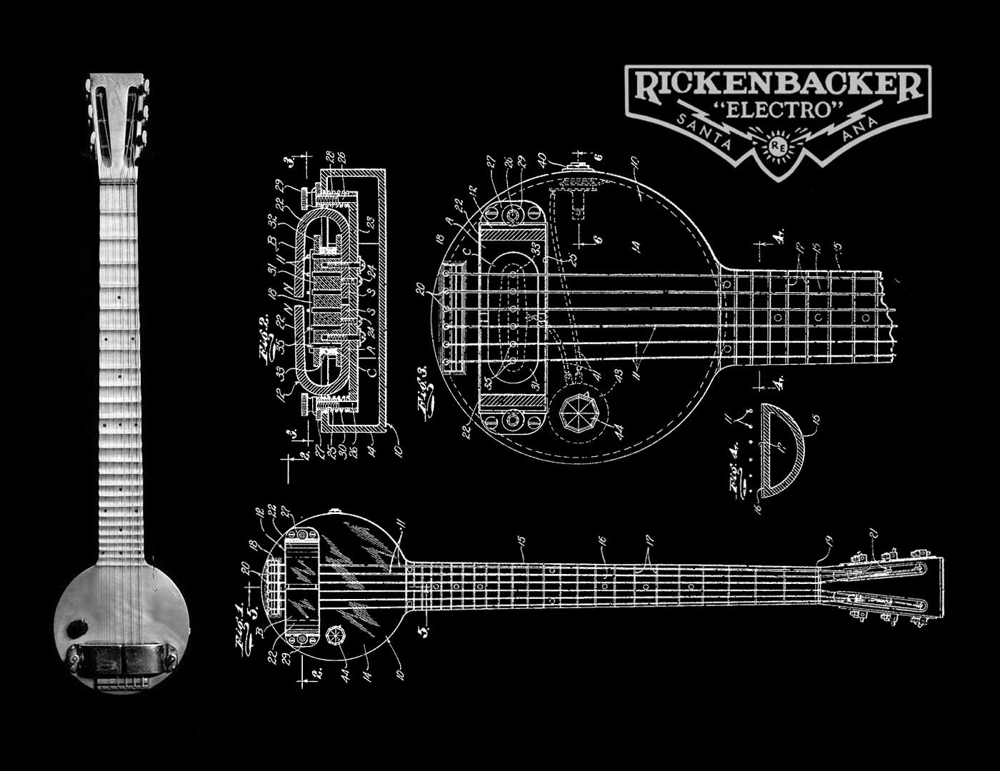

Herramientas para empezar
Empezar a tocar la guitarra puede suponer un problema sin un plan inicial, asi que aqui te proponemos una serie de herramientas y enlaces para que puedas aprender los conceptos básicos y enpezar con biuen pie. ¡Adelante!
Empezar a tocar la guitarra puede suponer un problema sin un plan inicial, asi que aqui te proponemos una serie de herramientas y enlaces para que puedas aprender los conceptos básicos y enpezar con biuen pie. ¡Adelante!
La “Frying Pan”, considerada la primera guitarra eléctrica por historiadores de la música, fue un auténtico hito. Fue inventada por George Beauchamp y Adolph Rickenbacker en 1931, su nombre, que se traduce como “sartén” en español, refleja su forma única (también similar a un banjo), con un cuerpo circular y un largo mástil.
| Nombre | Guitarra insignia | Genero Musical | Mejor solo |
|---|---|---|---|
| Jimi Hendrix | Fender 1968 | Rock Psicodélico | Purple Haze |
| Ritchie Blackmore | Fender Stratocaster ST72-145RB | Rock Progresivo | Child in time |
| Steve Vai | Ibanez JEM | Hard Rock/Metal | For the Love of God |